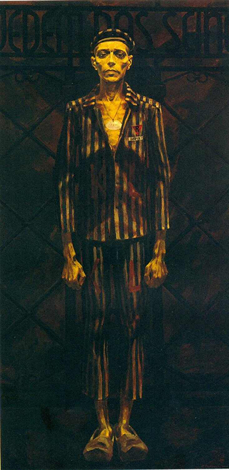

Геноцид — действия, совершаемые с намерением уничтожить, полностью или частично, какую-либо национальную, этническую, расовую или религиозную группу как таковую путём:
- убийства членов этой группы;
- причинения серьёзных телесных повреждений или умственного расстройства членам такой группы;
- мер, рассчитанных на предотвращение деторождения в такой группе;
- насильственной передачи детей из одной человеческой группы в другую;
- предумышленного создания жизненных условий, рассчитанных на полное или частичное физическое уничтожение этой группы.
Сметри и разрушения
- Массовое уничтожение людей: Истреблено более 3 млн мирных граждан и военнопленных2
- Угон населения на принудительные работы: Угнано в фашистское рабство под угрозой смерти более 380 тыс. человек, из которых многие погибли в результате невыносимых условий труда, лишений и истязаний
- Разрушение населённых пунктов: Разрушено и сожжено: 209 городов, не менее 11 726 сельских населённых пунктов. 270 деревень разделили трагическую судьбу Хатыни
В отношении населения БССР3 немецко-фашистские оккупанты, их европейские союзники, в том числе из Италии, Румынии, Венгрии, Словакии, Финляндии и других государств, проводили целенаправленную политику геноцида.
Жители Беларуси подверглись всем формам геноцида, которые определены Конвенцией ООН о предупреждении преступления геноцида и наказании за него от 9 декабря 1948 года.
Проведение политики геноцида белорусского народа было закреплено в нормативных документах нацистской Германии. Такие документы, как Генеральный план «Ост», Инструкция об особых областях к директиве № 21 (план «Барбаросса») от 13 марта 1941 года, распоряжение начальника штаба верховного главнокомандования вооружённых сил Германии «О военной подсудности в районе “Барбаросса” и об особых полномочиях войск», подписанное 13 мая 1941 года начальником штаба вермахта В. Кейтелем, и др., возводили зверства фашистов по отношению к мирному населению в ранг государственной политики и освобождали гитлеровских солдат от ответственности за преступления.
Например, план «Ост» предполагал порабощение и уничтожение народов СССР, еврейского и славянского населения завоёванных территорий. В основу плана легла расовая человеконенавистническая теория, так называемая новая территориальная политика гитлеровской Германии. Генеральный план «Ост» представлял собой комплекс документов, в которых рассматривались вопросы заселения «восточных территорий» (Польши и Советского Союза) в случае победы Германии в войне.
Этим планом предусматривалось выселить с занимаемой территории, что фактически означало уничтожить, 75 % населения Беларуси, а оставшиеся 25 % онемечить. Цыган, евреев, живших в Беларуси, ожидало полное истребление.
Территорию Беларуси планировалось включить в состав нацистской Германии и заселить немцами. По замыслам нацистов местное население оккупированных территорий должно было исчезнуть — целыми этническими группами и народами.
Колонизация Востока — конечная цель Генерального плана «Ост». Не позднее чем через десять лет Гитлер желал получить донесение о том, что «на присоединённых к Германии или же занятых нашими войсками восточных землях живёт как минимум 20 млн немцев».
В сентябре 1941 года, когда вся территория БССР была захвачена немецко-фашистскими войсками, в неволе оказалось примерно 7–7,5 млн её жителей.

«Военно-административное деление оккупированной территории Беларуси. 1942 г.»
С первых дней оккупации фашисты ввели особый режим, который ограничивал права и свободы жителей Беларуси:
- всё население подлежало обязательному учёту;
- запрещалось проводить митинги и собрания;
- вводился пропускной режим, комендантский час4 и др.
Руководство нацистской Германии разрешило своей армии истреблять мирное население завоёванных земель любыми средствами:
- уничтожать города, сжигать деревни вместе с жителями;
- забирать у населения продовольствие и скот;
- организовывать места принудительного содержания советских граждан с невыносимыми условиями;
- заставлять много и непосильно работать;
- изнурять голодом и холодом;
- применять расстрелы и виселицы, газовые камеры и сжигание;
- распространять эпидемии, не оказывать медицинской помощи.
Для организации и проведения геноцида руководство нацистской Германии и высшее командование гитлеровской армии направило на территорию БССР карательные подразделения: войска СС5 , органы полиции безопасности и СД6 , айнзацгруппы7 , зондеркоманды8 , латышские, литовские, украинские и другие коллаборационистские формирования.
Массовое уничтожение людей должно было подавить малейшие попытки сопротивления населения оккупационному режиму.
Одним из основных орудий истребления белорусского населения были лагеря смерти — места массового содержания и истребления людей. Всего на оккупированной врагом территории Беларуси было создано свыше 580 лагерей смерти.
Десятки тысяч людей, в том числе целыми семьями, заключались в лагеря смерти. Условия содержания в них были невыносимыми: голод, холод, непосильный труд, побои, истязания.
В лагерях смерти над узниками проводили различные опыты: их специально заражали инфекционными болезнями, испытывали на них действие отравляющих газов, подвергали воздействию низких температур, чтобы определить способности человеческого организма переносить их, и т. д. Труд узников широко использовался при строительстве военных объектов.
На оккупированной территории Беларуси лагеря смерти, их филиалы и отделения действовали на протяжении всего периода нацистской оккупации. В лагерях смерти на территории Беларуси нацисты уничтожили свыше 1,4 млн человек.
В Минске и его окрестностях гитлеровцы создали целую систему лагерей смерти: лагерь смерти «Тростенец», лагерь смерти у деревни Дрозды Минского района, лагерь смерти на ул. Широкой в Минске, лагерь смерти Шталаг 352 у деревни Масюковщина, Минское гетто.
Неотъемлемой частью немецко-фашистского оккупационного режима, наиболее радикальным средством утверждения и поддержки «нового порядка», реализации преступных планов германского командования стали карательные операции. За 1941–1944 годы оккупанты провели на территории Беларуси не менее 187 крупных карательных операций (по материалам уголовного дела о геноциде белорусского народа).
На территории Беларуси карательные операции стали проводиться уже в первые военные месяцы и включали издевательства, массовые расстрелы, сожжение целых населённых пунктов. С первых дней войны гитлеровские войска и специально созданные команды СС и СД уничтожали население Беларуси.
В июле 1941 года в Барановичах Г. Гиммлер провёл совещание, на котором было принято решение о проведении масштабной операции по очищению оккупированной территории Брестской, Барановичской, Пинской и Полесской областей от враждебных нацистам элементов: подразделений Красной Армии, попавших в окружение, партизан и местного населения. Операция получила название «Припятские болота». Она проводилась с 19 июля по 31 августа 1941 года. В ходе операции также отрабатывались методы массового уничтожения еврейского населения, в том числе путём утопления в болотах. На 13 августа 1941 года в результате карательной операции было убито 13 788 человек.
Каратели значительно активизировались осенью 1941 года. Гитлеровское руководство требовало проводить устрашающие акции против гражданского населения, вывозить мирных жителей на работы в Германию, захватывать продовольственные ресурсы и другие материальные ценности.
В сентябре – ноябре 1941 года карательные операции прошли на территории Пинской, Витебской, Гомельской, Минской, Могилёвской и Полесской областей. По неполным данным, в этих операциях оккупантами было убито более 7 тыс. человек.
С весны 1942 года оккупанты перешли к крупным карательным операциям против быстро расширяющегося движения сопротивления и к массовому уничтожению гражданского населения.
Стандартным сценарием, взятым на вооружение нацистскими военными преступниками и их пособниками, стало уничтожение деревень вместе с жителями в рамках войны с партизанами.
Карательные операции очень быстро приобрели характер тотального уничтожения мирного населения. Конечным результатом стало создание так называемых мёртвых зон, превращённых в выжженную пустыню.
Именно во время крупных карательных операций было сожжено и разрушено не менее 11 726 сельских населённых пунктов, некоторые из них подвергались сожжению несколько раз.
В составе фашистских карательных подразделений действовало подразделение под командованием О. Дирлевангера, которое комплектовалось из осуждённых за различные преступления. В 1943 году оно достигло численности полка и получило название «Особая команда СС Дирлевангер». Летом 1944 года подразделение было увеличено («Особая бригада СС Дирлевангер»). С 1942 года формирование стало принимать активное участие в акциях против партизан и местного населения.
Оккупанты насильственно вывозили на принудительные работы лиц из числа гражданского населения за пределы БССР, в частности на территорию Германии. В годы оккупации БССР немецко-фашистскими захватчиками в немецкое рабство угнано свыше 380 тыс. человек.
«В августе 1941 года фашисты разбомбили нашу деревню, всех оставшихся в живых загрузили на машины и завезли в Эстонию, где поместили на участок, огороженный колючей проволокой. Рядом находился рыбный завод, куда на работы загоняли взрослых. Есть не давали, кто-то из сочувствующих местных жителей передавал хлеб и картошку. Затем всех детей и взрослых посадили на корабль и отвезли в Германию, где поместили в лагерь, в разные бараки. В лагере взрослых водили на работы в кандалах, а детям делали какие-то уколы, от которых они умирали. Кормили какой-то “зелёной бурдой”. Через некоторое время меня и маму к себе в имение забрал бауэр, где мама с утра до вечера работала в поле. Впоследствии она умерла от тифа».
Рабский труд белорусских остарбайтеров (восточных рабочих) практиковали крупные промышленные предприятия, такие как «Бенц», «Юнкерс», «Телефункен», «Люфтганза» и др., небольшие фирмы, а также фермеры и обыватели Германии, Австрии, Восточной Пруссии, Польши, Латвии, Литвы и др. По сути, на государственном уровне поддерживалась система продажи людей.
Массовый характер носил и угон на принудительные работы детей. Имели место случаи использования их в качестве доноров.
На территории Беларуси было пять донорских детских лагерей: четыре в Гомельской области, один — в Минской. В большинстве случаев дети погибали. Кровь брали по несколько раз, и ребёнок засыпал навечно...
В хозяйстве «Красный Берег» в Жлобинском районе Гомельской области в 1943 году был создан сборный лагерь детей в возрасте от 8 до 14 лет, который просуществовал до 25 июня 1944 года. Детей насильно отнимали у матерей в Жлобинском, Рогачёвском, Стрешинском, Добрушском и других районах и доставляли в Красный Берег, где они проходили медицинский осмотр.
Тех, чья группа крови подходила, сразу грузили в эшелоны и отправляли в Германию, чтобы брать у них кровь для лечения раненых гитлеровских офицеров. Всего для этих целей увезли 1990 детей. Сегодня установлены имена только 15 малолетних узников. Судьба остальных 1975 пока неизвестна.
Впервые память о детях — жертвах пересыльного лагеря в Красном Береге была увековечена в 1969 году в мемориальном комплексе «Хатынь».
На месте бывшего детского лагеря смерти построен единственный на территории Содружества Независимых Государств памятник-мемориал «Детям — жертвам войны», посвящённый трагедии детей в годы Великой Отечественной войны. Этот мемориал не только о насилии — он об украденном войной детстве.
Каждая деталь комплекса по-своему символична. «Кораблик надежды», «Площадь Солнца», «Луч памяти» и «Мёртвый класс» — не просто объекты мемориального комплекса, а раны, которые никогда не затянутся.

«Кораблик надежды»

«Мёртвый класс»
Мемориальный комплекс «Детям — жертвам войны»
Осуществлению политики геноцида белорусского народа на оккупированной территории Беларуси способствовали коллаборационисты — люди, которые осознанно, добровольно сотрудничали с немецко-фашистскими оккупантами в их интересах и в ущерб своему государству.
В годы войны польские, украинские, латышские и литовские националисты посягали на территориальную целостность Беларуси.
29 марта 1943 года украинские националисты учинили кровавую расправу над жителями деревни Чуденичи Логойского района. Около 40 человек, в том числе стариков, женщин и детей, согнали в колхозную конюшню. Часть из них расстреляли, а остальных заживо сожгли. В домах расстреляли свыше 60 человек, имущество разграбили, деревню сожгли, в нацистское рабство угнали 8 человек.
8 апреля 1943 года в деревне Хотеново Любанского района Минской области каратели уничтожили в домах свыше 200 человек, в основном женщин и детей. Восьмилетнего сына одного из жителей деревни, Степана Мытника, который выбежал из дома и пытался спастись, каратели схватили и бросили в огонь.
Методы карателей были крайне жестокими. Ни в чём не повинных людей расстреливали в домах, на улицах, в лесу, сгоняли в отдельные постройки и заживо сжигали, убивали стариков, женщин и детей.
Польские националистические формирования. Армия Крайова. Польские националисты ставили своей задачей захват земель Западной Беларуси, которые в 1939 году в результате освободительного похода Красной Армии воссоединились с БССР. В период немецко-фашистской оккупации управленческий аппарат в Барановичском, Белостокском, Вилейском, Лидском, Слонимском округах состоял в основном из поляков.
В феврале 1942 года путём объединения ряда польских подпольных организаций была создана Армия Крайова. После разрыва дипломатических отношений Советского Союза с польским эмигрантским правительством с весны 1943 года действия Армии Крайовой приобрели отчётливый антисоветский и антибелорусский характер.
В директивных документах, определявших деятельность Армии Крайовой на оккупированной территории Беларуси, прямо указывалось: «Каждый поляк должен знать: немец и белорус — враги польского народа…»
Отдельные формирования Армии Крайовой вели боевые действия как против гитлеровцев, так и против белорусских партизанских отрядов, иные — только против белорусских партизан (районы Налибокской пущи, Новогрудка, Виленщины).
С целью зачистки территории от нежелательного населения, которое не поддерживало польские формирования, Армия Крайова совершала террористические операции против мирных граждан (Волковысский, Лидский, Щучинский, Заславский, Дзержинский, Ивенецкий районы, Виленская партизанская зона).
«В 1944 году, на второй день Пасхи, к нам домой пришли белополяки11, заставили отца запрячь гужевую повозку и приказали отвезти мирных жителей из деревни Селец в деревню Голдово Лидского района. Я была прямым свидетелем тех событий. В тот день белополяки забрали из деревни Селец одного из братьев по фамилии Клейда, мужа и жену Ганевичей, соседку Гуйдо (родом из деревни Дятлово). Когда её выводили, у неё на руках был годовалый ребёнок, которого белополяк вырвал из рук и отбросил в сторону. Всех людей по списку посадили на повозку, управляемую моим отцом, и отвезли в деревню Голдово Лидского района, где они и иные мирные граждане деревни Селец Лидского района были зверски замучены белополяками (отрезаны языки, уши и др.) и убиты».
Армия Крайова официально была распущена 19 января 1945 года, однако некоторые местные структуры не подчинились этому решению и продолжили террор в отношении представителей органов власти, мирного населения, а также нападения на учреждения торговли и финансов.
За 1944–1947 годы бандитскими группами Армии Крайовой было совершено 575 террористических актов, 39 диверсий, 252 нападения на государственные учреждения и предприятия. От рук польских националистов погибло более 1500 граждан БССР.
Последняя вооружённая группа Армии Крайовой была обнаружена и ликвидирована 20 марта 1953 года в деревне Самаровичи Зельвенского района.
Литовские и латышские формирования. В рамках расследования Генеральной прокуратурой уголовного дела о геноциде белорусского народа установлены факты уничтожения деревень и мирного населения литовскими военно-полицейскими формированиями на территории Минской области. Они действовали на территории Воложинского района в деревнях Доры и Углы, в деревне Мокрица Мядельского района.
Отметился зверствами 2-й литовский вспомогательный полицейский батальон под командованием Антанаса Людвико Импулявичюс-Импуленаса (известен под прозвищем «Минский мясник»).
С участием личного состава указанного батальона уничтожено 387 населённых пунктов, убито более 13 000 мирных жителей, более 7000 жителей были насильно вывезены на принудительные работы. В результате значительно сократилось население Дриссенского, Освейского и Россонского районов. В частности, население Освейского района Витебской области, насчитывавшее к началу войны 21 062 человека, сократилось к моменту освобождения от немецко-фашистской оккупации до 8070 человек, то есть более чем на 60 %.
В период с июня 1941 года по июль 1944 года на территории современной Республики Беларусь в массовом уничтожении мирных жителей участвовали литовские коллаборационистские подразделения: соединения самообороны, строительные батальоны, местная дружина Литвы и вспомогательные батальоны полиции безопасности Третьего рейха. Так, 3-я рота литовской полиции с апреля 1943 года участвовала в проведении карательных операций против мирного населения на территории Ошмянского района.
Латышские военно-полицейские формирования также участвовали в планомерном уничтожении населения БССР. Согласно архивным документам и показаниям свидетелей, действия латышских карателей отличались особой жестокостью: большинство людей было уничтожено путём сожжения, утопления, нанесения ран, которые приводили к долгой и мучительной смерти.
Белорусские коллаборационистские организации. Подавляющее большинство белорусского народа не восприняло нацистскую идеологию, самоотверженно вступило в борьбу против агрессоров. Это было поистине всенародное движение антифашистского сопротивления, направленное на отстаивание Отечества, сохранение национальных традиций и духовных ценностей белорусского народа, которое явилось значительным вкладом в общую борьбу народов Советского Союза против нацистской Германии.
В период Великой Отечественной войны на оккупированной территории Беларуси развернулось острое и непримиримое противостояние патриотической части белорусского общества, отстаивавшей в борьбе с немецко-фашистскими захватчиками национально-государственные интересы, и небольшой горстки тех, кто сотрудничал с оккупантами, предав Родину.
В годы Великой Отечественной войны на территории БССР под контролем немецкой оккупационной власти действовали коллаборационистские формирования: Белорусская краевая оборона, Белорусская народная самопомощь и т. д.
Из-за малой численности своих охранных и полицейских подразделений гитлеровские оккупационные власти уже с июля 1941 года были вынуждены привлекать полицаев из местных жителей. Формирование военизированных частей из белорусов оказалось сложной задачей для оккупантов. Число частей, которые удалось сформировать из белорусов, было значительно меньше числа батальонов из литовцев, латышей, эстонцев, украинцев и представителей иных национальностей.
В январе 1943 года фашистами по национальному признаку был создан 13-й белорусский полицейский батальон при СД. Командные должности вплоть до командира роты занимали белорусы.
В задачи 13-го белорусского полицейского батальона при СД входило проведение массовых карательных операций против советских партизан на территории Беларуси, охрана территориальных органов СД, тюрем, лагерей смерти, коммуникаций и т. д.
В Беларуси 13-й белорусский полицейский батальон при СД принимал участие в карательных операциях на территории Минской, Могилёвской и Витебской областей. Летом 1943 года батальон участвовал в операциях против мирных граждан в Минске.
Весной-летом 1942 года оккупационные власти активно формировали псевдонациональные военизированные организации для оказания содействия в реализации преступных планов Гитлера. Решение о создании Белорусского корпуса самообороны было принято в июле 1942 года.
В феврале 1944 года для борьбы с партизанами было создано пронацистское вооружённое формирование «Белорусская краевая оборона». Согласно многочисленным документальным доказательствам, члены этого формирования были задействованы в охране порядка и операциях по борьбе с партизанами на территории Беларуси, участвовали в карательных операциях.
Формирование Белорусской краевой обороны в целом провалилось по причинам нехватки вооружения и отсутствия дисциплины. Часть новобранцев была объединена в шесть сапёрных батальонов краевой обороны, другие вошли в сапёрные батальоны вермахта. На базе Белорусской краевой обороны в начале 1945 года была создана 30-я добровольческая пехотная дивизия СС.
Белорусская народная самопомощь, созданная осенью 1941 года под предводительством И. А. Ермаченко, занималась вербовкой и вывозом населения на принудительные работы в Третий рейх, организацией военного дела, школьного образования, культурой и пропагандой нацизма.
После поражения немецко-фашистских войск под Сталинградом и Курском гитлеровцы стали активнее привлекать к себе на службу население оккупированных территорий.
Гитлеровские оккупационные власти в декабре 1943 года создали организацию «Белорусская центральная рада» под руководством Р. К. Островского. Ему, в частности, были предоставлены полномочия в области организации школьного образования, культуры, социального обеспечения. Однако Белорусская центральная рада служила гитлеровскому режиму.
Оккупанты использовали коллаборационистов для развития псевдонационального движения, которое проявилось в насаждении псевдонациональных символов (бело-красно-белый флаг, герб «Погоня»), культурных традиций, чуждых населению БССР (празднование дня объявления Белорусской Народной Республики 25 марта).
Бело-красно-белая символика, изображения «Погони» стали использоваться для обозначения белорусской национальной принадлежности в среде добровольных помощников нацистского режима, в том числе вооружённых формирований, участвовавших в карательных операциях.
Коллаборационистская символика использовалась в пропагандистских целях совместно с символами Третьего рейха и изображениями Адольфа Гитлера, который прославлялся как вождь белорусского народа, несущий освобождение от евреев и большевиков.
Носители коллаборационистской символики разделяли взгляды национал-социалистов и активно участвовали в организации на территории БССР расовых чисток, казней военнопленных и мирного населения, грабежей в пользу нацистской Германии, в уничтожении жилья и иного имущества, без которого население обрекалось на долгую и мучительную смерть; убивали партизан, подпольщиков, а также их родственников.
Всего за неделю до освобождения Красной Армией столицы Беларуси — 27 июня 1944 года — был созван так называемый Белорусский народный конгресс в Минске. Уже был буквально слышен гром артиллерии советского наступления... После конгресса делегаты были доставлены в Берлин в специальном поезде через Кёнигсберг и Познань, а затем развернули в рейхе дальнейшую политическую деятельность, в том числе среди белорусов, угнанных в Германию на принудительные работы.
Многие из них продолжали свои усилия, направленные против Советского Союза, в изгнании в США, Великобритании и ФРГ.
Своей цели мобилизации всех политических и военных сил против советских войск оккупационная власть не достигла. Сильные советские традиции в Беларуси и слабо выраженный национализм привели к тому, что политические организации, поощряемые гитлеровскими органами, в своём националистическом курсе быстро оказались в изоляции.
9 августа 2020 года в нашей стране состоялись выборы Президента Республики Беларусь, на которых более 80 % граждан отдали свои голоса за кандидатуру действующего Главы государства — А. Г. Лукашенко.
Вместе с тем деструктивные силы с целью осуществления государственного переворота организовывали и проводили несанкционированные массовые мероприятия, в ходе которых применяли насилие к должностным лицам, осуществляли погромы, разрушали объекты инфраструктуры.
Как и коллаборационисты в годы Великой Отечественной войны, участники и предводители массовых беспорядков использовали нацистские лозунги («Жыве Беларусь») и символику (полотно бело-красно-белого цвета, изображение герба «Погоня»).
Разделялись ими и нацистские методы. К примеру, в годы оккупации нацисты составляли списки представителей власти, советских активистов, которые в первую очередь подлежали уничтожению. По такой же «методичке» действовали идейные вдохновители и руководители попытки насильственного свержения власти в августе 2020 года: в открытом доступе размещали личные данные и сведения о частной жизни должностных лиц, журналистов и активистов с призывами к применению насилия. Так же, как и в годы Великой Отечественной войны, было обещано освобождение от ответственности за эти и другие преступления.
Пытаясь уничтожить национальную государственность, эко номику и культуру белорусского народа, захватчики разрушали колхозы и совхозы, промышленные предприятия, вузы и научно исследовательские институты, театры, больницы и школы.
В промышленности более всего пострадали пищевая, ме талло-обрабатывающая, машиностроительная, лесная отрасли. Полностью были разрушены 194 лесопильных и мебельных заво да, 62 льнозавода, Минский радиозавод, Могилёвский труболи тейный завод, Оршанский металлообрабатывающий завод и др.
Варварскому разрушению подверглось сельское хозяйство. Самые большие потери понесли сельскохозяйственные пред приятия Витебской и Могилёвской областей. Разрушено 10 тыс. колхозов, 92 совхоза, 316 машинно-тракторных станций. Отнято 8,7 млн голов скота и 9 млн голов птицы.
Уничтожено и повреждено 2187 зданий больниц и амбулато рий, 11 557 учреждений образования, 218 церквей, 66 костёлов.
В Германию вывезено 9745 больничных кроватей, 56 590 кг ме дикаментов, 7,4 млн погонных метров перевязочного материала, почти 250 тыс. штук медицинских инструментов.
Величина ущерба, рассчитанного на основе данных о потерях национального дохода республики, составляет 43 529,30 тонн золота, что по состоянию на 1 октября 2022 года эквивалентно 2,3 трлн долларов США

Вид на разрушенные жилые дома по ул. Ленинской в г. Минске. 1944 г.
Немецко-фашистскими захватчиками были разрушены, сожже ны и уничтожены Белорусский государственный университет с зоологическим и минералогическим музеями, все 5 учительских институтов, 4 педагогических института, институт журналистики, Республиканская политпросветшкола и т. д.
Разрушению подверглись 5 тыс. театров и клубов, уничтоже но 3077 библиотек. Разграблен ценнейший исторический архив Академии наук БССР, библиотека, насчитывавшая 784 500 томов научных трудов.
Вывезены многие произведения искусства, хранившиеся в Государственной картинной галерее БССР, около 1700 про изведений живописи и икон, 313 музыкальных инструментов, 142 тыс. томов нотной библиотеки, 70,5 тыс. книг по искусству, 1242 экспоната живописи (в том числе картины И. Е. Репина, И. И. Левитана, В. А. Серова, И. К. Айвазовского и других худож ников), десятки скульптур (Б. Растрелли, П. К. Клодта, М. М. Анта кольского и других скульпторов), 1600 предметов художествен ной мебели и фарфора.

Вид на здание Большого государственного ордена Ленина театра оперы и балета БССР. 1944 г.
Причинённый экономике и культуре Беларуси ущерб в полной мере не возмещён.
Германская агрессия стала испытанием на прочность не толь ко морального духа белорусов, но и способности отстаивать на циональные культурные традиции и свободу. По существу, народ Беларуси был поставлен перед выбором не только государствен ного строя, но и возможности биологического существования. И белорусский народ свой выбор сделал. Ни массовые репрессии, ни пытки и казни патриотов, ни специальные карательные опера ции против мирных жителей и партизан, ни сжигание деревень и сёл вместе с людьми, ни ежедневно насаждаемая нацистская идеология не сломили волю белорусов к противостоянию врагу.
В годы Великой Отечественной войны миллионы жителей Беларуси приняли активное участие в отстаивании государствен ной независимости. Массовое сопротивление агрессорам — свидетельство высокого морального духа белорусского народа, неприятия чуждых идей, стремления сохранить свободу и неза висимость Отечества.
С первых дней войны на территории Беларуси создавались под польные организации, партизанские отряды. Их организатора ми выступали партийные, советские, комсомольские работники, беспартийные патриоты и военные, оставшиеся на оккупированной территории. Уже во второй половине 1941 года на захваченной тер ритории Беларуси действовало 231 партизанское формирование. Наряду с представителями белорусского народа в вооружённом сопротивлении фашистским агрессорам участвовали патриоты 70 национальностей и народностей Советского Союза и зарубежных стран общей численностью более 374 тыс. бойцов. Кроме того, свы ше 70 тыс. патриотов участвовали в подпольной борьбе.
Не оставались в стороне от общей борьбы советского народа и дети.
C первых дней Великой Отечественной войны многие из них стремились попасть на фронт, чтобы защитить страну от немец ко-фашистских захватчиков. Они не щадили своих жизней и не перекладывали ответственность на старших, проявляли муже ство, бесстрашие и самоотверженность в бою, терпели все тяготы и лишения наравне со взрослыми.
Один из них — разведчик 43-го стрелкового полка 106-й стрел ковой дивизии 65-й армии Центрального фронта Борис Цариков, уроженец Гомеля. Во время войны семья Цариковых была эвакуи рована, но в феврале 1943 года Борис был призван на фронт и направлен в 43-й Даурский стрелковый полк 106-й стрелковой ди визии. Боевой путь привёл Бориса освобождать родную Беларусь.
В октябре 1943 года Борис Цариков с группой минёров пер вым форсировал реку Днепр недалеко от посёлка Лоев Гомель ской области. Под ураганным огнём одним из первых он ворвался в немецкие траншеи и с помощью автомата и гранат уничтожил противника, обеспечив таким образом переправу через реку 1-го стрелкового батальона. 15 октября 1943 года Борис Цариков 5 раз возвращался на левый берег Днепра с боевыми донесени ями в штаб. Одновременно он смог подобрать более 50 красно армейцев из разных переправившихся частей и организовать их в группы. В течение 5 суток Цариков героически участвовал в боях по расширению плацдарма на правом берегу Днепра, воодушевляя личным примером других бойцов. За успешное форсирование реки Днепр и проявленную при этом отвагу и геройство Указом Президиума Верховного Совета СССР от 30 ок тября 1943 года Борису Царикову было присвоено звание Героя Советского Союза. Однако 13 ноября 1943 года Борис Цариков погиб. Именем героя названа школа № 25 в Гомеле, а также улицы в Гомеле и Лоеве.
В Беларуси сопротивление оккупантам носило общенародный харак тер: по организованности, количеству участников, формам и средствам борьбы оно превосходило все европейские страны.
Володя Щербацевич жил до войны вместе со своей мамой в Минске. Во время Великой Отечественной войны они прятали в своей квартире раненых военнопленных, оказывали им медицин скую помощь, помогали уйти из оккупированного города. Их сдал провокатор, который был внедрён в подпольную организацию. Мать и сына бросили в фашистские застенки. Их жестоко пытали. 26 октября 1941 года в Минске фашисты устроили показательную казнь. Володя Щербацевич вместе с 10 другими подпольщиками был повешен. Ему было всего 15 лет. Казнь была совершена кара телями 2-го литовского батальона вспомогательной полицейской службы и снималась на плёнку фотографом. Долгое время о судь бе этого подростка не было известно. В 1967 году по материалам расследования журналиста В. Н. Морозова на основе фотографии с места казни была установлена личность Володи Щербацевича и снят документальный фильм «Казнён в 41-м».
Марат Казей, четырнадцатилетний партизан отряда имени 25-летия Октября, был разведчиком штаба 200-й партизанской бригады. Марат много раз проникал в немецкие гарнизоны и возвращался в отряд с ценной информацией. В марте 1943 года Марату удалось фактически спасти свой партизанский отряд. Он смог прорваться сквозь «кольцо» блокады противника и при вести на помощь партизанский отряд им. Д. А. Фурманова, кото рый находился в семи километрах от окружённых партизан. Свой последний бой юный разведчик принял 11 мая 1944 года. Чтобы не попасть в плен к фашистам, он подорвал себя и врагов гранатой.
Зина Портнова была членом подпольной организации «Юные мстители» на станции Оболь Шумилинского района Витебской об ласти. Пятнадцатилетняя подпольщица работала в столовой для немецких офицеров, где по указанию руководителей подпольной организации отравила более ста гитлеровцев. Скрываясь от пре следования, она ушла в партизанский отряд, стала разведчицей партизанского отряда имени К. Е. Ворошилова.
В декабре 1943 года при возвращении с боевого задания Зина Портнова была задержана. Воспользовавшись тем, что допраши вающий её офицер отвлёкся, она схватила пистолет со стола и застрелила его и ещё двух оккупантов. Пыталась бежать, но снова была схвачена. Её подвергли пыткам и расстреляли.
Марат Казей и Зина Портнова удостоены звания Героя Советского Союза посмертно.
В годы Великой Отечественной войны 22 наших генерала-зем ляка командовали армиями, более 400 белорусов и уроженцев Беларуси являлись генералами и адмиралами. Они самоотвер женно участвовали в битвах под Брестом, Москвой, Сталингра дом, Курском, освобождали Кавказ, Украину, родную белорусскую землю, прибалтийские республики, штурмовали Берлин и Прагу, приближали освобождение народов Европы от нацистского ига.
За героизм и мужество, проявленные в годы войны, около 400 тыс. воинов-белорусов и уроженцев Беларуси были награж дены боевыми орденами и медалями Советского Союза. Среди полных кавалеров ордена Славы — 88 наших земляков, 449 чело век получили звание Героя Советского Союза, а Павел Головачёв, Степан Шутов, Иосиф Гусаковский, Иван Якубовский были дважды удостоены этой награды.
Патриотическая борьба военного поколения — это нацио нальная гордость белорусов. Память о ней как о невиданном в истории ратном подвиге наших предков, отстаивавших свою на циональную государственность, необходимо хранить, передавая из поколения в поколение.
В Республике Беларусь продолжается начатое в апреле 2021 года расследование уголовного дела о геноциде белорусского народа в годы Великой Отечественной войны и послевоенный период. Ежедневно прокуроры, следователи, эксперты, историки и архивисты в рамках работы следственной группы Генеральной прокуратуры Республики Беларусь устанавливают новые факты преступлений нацистских оккупантов и их пособников.
В ходе расследования уголовного дела изучены руководящие документы гитлеровской Германии, которые возводили зверства по отношению к мирному населению в ранг государственной политики и освобождали солдат от ответственности за преступления, устанавливаются многочисленные ранее неизвестные факты массового уничтожения нацистскими преступниками гражданского населения Беларуси.
Проводится работа по фиксации информации от очевидцев тех событий и их родственников. В ходе предварительного следств ия допрошено свыше 17 тыс. человек, почти 8 тыс. из которых — бывшие узники лагерей смерти. Следственной группой изучено большое количество архивных документов и тысячи уголовных дел в отношении нацистских преступников.
Проведено более 400 осмотров мест происшествий, в ходе которых установлены ранее неизвестные места массовых убийств гражданского населения.
Расследованием устанавливаются обстоятельства массового сожжения населённых пунктов, часто вместе с их жителями. До возбуждения уголовного дела о геноциде белорусского народа было известно о 9200 сожжённых населённых пунктах. Путём допросов и изучения архивных документов прокурорами получены сведения о сожжении ещё свыше 2500 сёл и деревень.
По инициативе Генеральной прокуратуры 5 января 2022 года принят Закон Республики Беларусь «О геноциде белорусского народа», согласно которому злодеяния нацистских преступников, их пособников, националистических формирований в годы Великой Отечественной войны и послевоенный период, направленные на планомерное физическое уничтожение белорусского народа, признаны геноцидом белорусского народа.
Статья 1. Совершённые нацистскими преступниками и их пособниками, националистическими формированиями в годы Великой Отечественной войны и послевоенный период злодеяния, направленные на планомерное физическое уничтожение белорусского народа путём убийства и иных действий, признаваемых геноцидом в соответствии с законодательными актами и нормами международного права, являются геноцидом белорусского народа.
Мы всегда должны помнить о том, какой ценой была добыта Великая Победа. Это необходимо, чтобы никогда больше не повторились ужасы войны. Поэтому в белорусском календаре есть те памятные даты, которые являются священными для всех поколений белорусов, — День Победы 9 мая и День всенародной памяти жертв Великой Отечественной войны и геноцида белорусского народа 22 июня.
В День Победы мы приходим к памятным местам, связанным с Великой Отечественной войной, чтобы почтить память миллионов людей, погибших во время войны.
В День всенародной памяти жертв Великой Отечественной войны и геноцида белорусского народа память погибших чтят минутой молчания.
В разных уголках Беларуси, потерявшей в 1941–1945 годах каждого третьего жителя, созданы мемориальные комплексы, установлены монументы, посвящённые событиям самой трагической и кровопролитной войны на нашей многострадальной земле.

Мемориальный комплекс «Буйничское поле» (г. Могилёв)
.jpg)
Мемориальный комплекс «Катюша» («За нашу советскую родину!») (г. Орша)
Сегодня в стране около 9 тыс. памятников и захоронений Великой Отечественной войны. Они входят в военно-исторические маршруты и экскурсии, но главное — являются святым местом почитания погибших, вечным напоминанием о том, как бесценен мир.
Наше государство и общество заботится о местах исторической памяти, связанных с событиями Великой Отечественной войны.
Сохранить память о героях, событиях, которые нельзя забывать, позволяют произведения литературы, кино, изобразительного и музыкального искусства.
В память о погибших жителях сожжённой карателями деревни Хатынь белорусским композитором Игорем Лученком на слова Григория Петренко была написана песня «Хатынь». Она впервые прозвучала в 1971 году в исполнении ансамбля «Песняры».
Голодные и измученные узники борются за свою жизнь и свободу, пока фашисты не настигают беглецов. Ценой своей жизни Иван спасает девушку. В мемуарах «Долгая дорога домой» Василь Быков утверждал, что сюжет повести основан на реальной истории: будучи в 1945 году в австрийской части Альп, он встретил бывшую узницу лагеря смерти из Италии «в полосатой куртке и чёрной юбочке», которая искала Ивана.
На основе сюжета повести на киностудии «Беларусьфильм» в 1965 году режиссёром Борисом Степановым был снят одноимённый художественный фильм.
Картина «Узник 32815» белорусского художника Михаила Савицкого является автопортретом. Во время Великой Отечественной войны он был узником лагеря смерти в Бухенвальде. На картине на фоне кованых ворот Бухенвальда стоит юноша в полосатой робе заключённого. В верхней части размещена надпись на немецком языке «Jedem das Seine» («Каждому своё»). На полах робы пропечатаны буквы К, L — концентрационный лагерь. Маленький красный треугольник с буквой R означает «русский, политический». На шее у заключённого на бечёвке висит жетон с номером 32815, под которым числился узник. Потеря жетона каралась смертью. Во взгляде юноши — дерзкая смелость непокорённого.
Картина "Узник 32815". Художник М. Савицкий. 1976 г.
Конституция Республики Беларусь гласит: «Сохранение исторической памяти о героическом прошлом белорусского народа, патриотизм являются долгом каждого гражданина Республики Беларусь»
Расследование уголовного дела о геноциде советских граждан, белорусов, лиц иных национальностей и этнической принадлежности, находившихся на территории БССР в годы Великой Отечественной войны, является данью памяти погибшим и способствует исторической справедливости, направлено на защиту интересов белорусов как социальной общности, служит реализации антифашистского принципа «Никогда больше!».